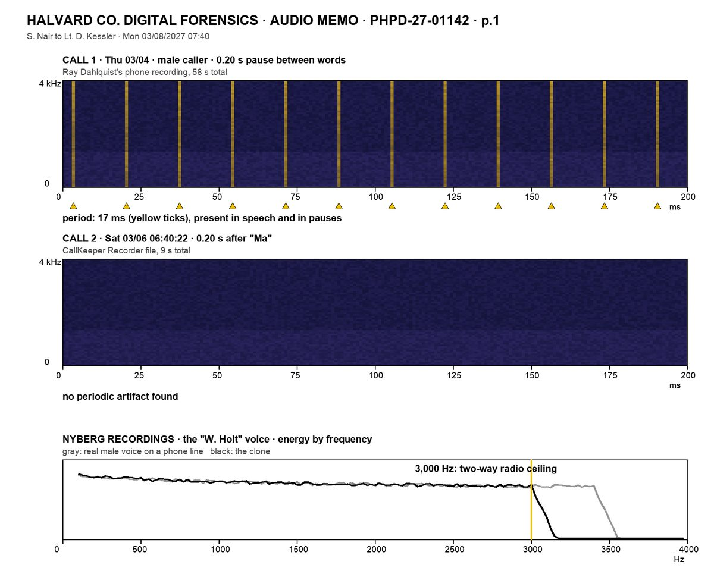
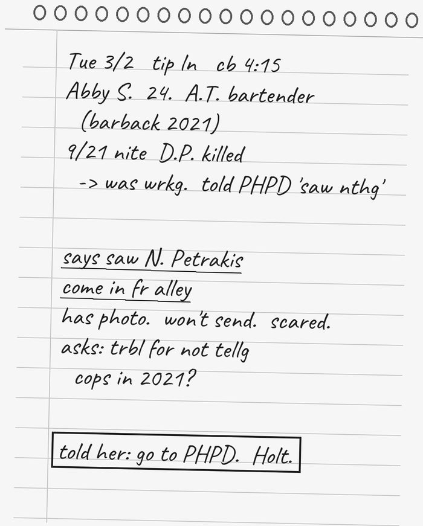

Port Halvard Police Department · Case # PHPD-27-01142
A Detective Maren Holt Thriller by Reena Luiz · Book 3 · a work of fiction
Case file · Reader accessThis file follows the book. The first vote is for readers who've reached the end of Chapter 21; the second, Chapter 31. Nothing on this page names the killer. Everything here is fiction: Port Halvard, the Halvard Courier and everyone in them are made up.
Somebody built Walt Holt's voice out of thirty years of police radio, and has been selling perfect lies to frightened people for years. Somebody who knew him well enough to talk like him. Who?
You said: Gordon Eklund
Sarada Nair has her sleeves pulled down over her hands and a cold coffee she isn't drinking.
"I thought that too. At about three in the morning, which is when I think everything." She turns the cup a quarter turn. "He's spent forty years with case tapes. He knows compression better than I ever will. He lied to Maren's face and then looked at his basement door like it had called his name." She stops. "He'd be good enough. That's what scares me. I keep wanting it to be someone who isn't good enough." A small, unhappy smile. "Count the hours, if you get the chance. The model needed a lot of them."
You said: Det. Wes Garrity
Rick Haugen unwraps a cough drop and doesn't put it in his mouth.
"Yeah. I know." He looks at the wrapper. "He sat in on the briefing. He knows about the seventeen. He wrote down she says Ma with his own hand, and he told that family to record. He reads every file in the building. He told us so, like it was cute." He shrugs. "I've had lunch with him. He paid. That's not evidence." He finally eats the cough drop. "It's not nothing, either. Watch who he calls. A guy like that always has somebody he calls."
You said: Gail Sorensen
Lieutenant Dana Kessler doesn't look up from the report on her desk. The blue Bic in her teeth is chewed flat.
"The Courier has buried more of my press releases than I've written." She takes the pen out of her mouth. "Two of her sources are dead. She has a key to a building where a girl walked in and didn't walk out. She says the right thing before anyone asks." She sets the pen down, exactly parallel to the edge of the desk. "That's a list. A list isn't a case. And a grudge against a newspaper isn't one either, believe me, I've checked."
You said: Nick Petrakis
Det. Ron Pelletier cracks a Diet Pepsi and puts his feet up on the lieutenant's wastebasket.
"I get it. Abby tells the paper she saw Nick come in from the alley. Walt says the Petrakis boy. Nick screams leave 2021 alone in his own kitchen and texts his lawyer the second we walk in." He drinks. "But Nick ran a bar for five years and couldn't fix his own neon sign. You think he built a voice out of thirty years of police radio?" He shakes his head. "Nick knows something. Nick's known something since 2021. Knowing isn't building. Find out what he's scared of, and who."
You said: Someone else
Walt Holt is doing the Jumble in the sunroom at Bethel with a pencil and powdered sugar on his cardigan. He doesn't look up for a while.
"Somebody else." He writes in a letter, slowly. "Good. Most people stop at the first fella with a reason." He taps the pencil on the paper. "You want the one who knows the words, Mare, not the one who knows the machine. Anybody can buy a machine." He finally looks up, bright and clear for a second. "Watch who brings the coffee. Every time. The one who brings the coffee hears everything." He goes back to his puzzle. "What's a six-letter word for patient?"
Abby Strand called her mother at 6:40 Saturday morning and said Ma. Twenty-five minutes later she was under the ferry dock. Maren thinks she knows who killed her. Do you?
You said: Ray Dahlquist
Carol Strand is at her kitchen table with both hands flat on it. The mugs on the drainboard are upside down in a row.
"Ray told me to hang up." She says it to the table. "He had a reason, I know he had a reason, I could hear it in his voice that morning and I didn't want to hear it. He carried the bag. He counted the money in the truck, I think. I think about that." She is quiet for a long time. "I've been with him six years. I can't tell you. I've sat here every night this week trying to pick, and I can't. That's my answer. I'm sorry. That's all of it."
You said: Mason Tully
Sarada Nair has the laptop closed on her knees and doesn't open it.
"He has forty hours of her voice. He built a copy of her out of three years of texts. He lied about Thursday. He lives two blocks from the water and nobody saw him all Friday night." She pushes her glasses up. "And he was on the air at 6:40 Saturday, with two people watching him read the tide table." A pause. "The bot says Ma. It says it because she wrote it, a thousand times. Sit with that for a minute. Then ask yourself what else learned it from her."
You said: Jaylen Ross
Special Agent Paul Corrigan is in his cardigan, in a hallway with a vending machine, looking at his phone.
"Case closed, ma'am. Thank you for playing." He doesn't smile. "That's what the chief would like me to say, and I said a version of it at a podium last night." He puts the phone away. "Here's what I'd say off the record. He had the money. He lied about the bag. His phone was at the dock. He's also nineteen, and somebody wrote that job for a boy exactly like him." He looks down the hall. "Pairs of hands always know a little less than you hope."
You said: Nick Petrakis
Travis Ward is under a log truck. Only his boots are showing.
"Nick yelled at her. Nick yelled at me too, back then, everybody yelled at me." His voice comes out flat off the oil pan. "It's his bar. His back hall. His brother. He's had a lawyer since February and he's never once said what he saw in 2021." A wrench clanks. "I want it to be him, kind of. That'd be simple." He slides out on the creeper and sits up, wiping his hands. "But I stood in that bar a lot of nights. Nick was always behind the counter. It was the back hall you had to watch."
You said: Gordon Eklund
Lieutenant Dana Kessler stands at the top of a basement staircase in University Place, looking down at eight rows of steel shelves.
"I said it out loud. In his kitchen. We have the Artisan." She takes the blue Bic out of her teeth. "A man who can fake anything, who lied about meeting her, who swings a leg, who has Walt Holt on a shelf with a label on it. If you put that in front of a jury they'd go home early." She looks at the pen. "And then my analyst counted the hours and told me it wasn't enough, and she's never been wrong in front of me yet. Which is annoying."
You said: Det. Wes Garrity
Rick Haugen is sitting on the edge of a desk in the homicide room at midnight, with a coffee he's stopped drinking.
"He's a jerk. I've arrested jerks. It's never as satisfying as you'd think." He rubs his eyes. "He knew about the seventeen. He wrote down Ma. He was on Harbor Street at 10:22 and he lied about the pho." He shakes his head slowly. "I like him. I'm sorry, I do." He sets the cup down. "But Maren's right about one thing. He talks to somebody. He always has. The question was never what Wes knew. It's who he told."
You said: Someone else
Walt Holt has the Jumble on his knee in the sunroom at Bethel, and a pencil behind his ear.
"Somebody else." He nods, as if that settles it. "Good. That's a cop's answer, Mare." He writes a letter, erases it. "You know the trick, don't you? Everybody looks at the fella who's out of place. The stranger. The kid. The one with the record." He taps the pencil on the paper. "The one you'd never check is the one who's always there. Brings the coffee. Holds the door. Knows your name." He smiles at the window. "Six letters. Loyal. No. That's five."
Thursday afternoon, a man on Carol Strand's phone tells her where to leave the money. Saturday at dawn, her daughter's voice says Ma. Here are both, as Financial Crimes typed them up.
Carrier note under Call 2: the call did not come from Abby's line, and her handset had not touched the network since Friday at 10:31 p.m.

So which voice belonged to a real person?
You said: Call 1, Thursday
Sarada already settled Thursday's man: a clock ticking under his voice every 17 milliseconds. Nobody heard the daughter on Call 1; Ray started recording too late. All you have is Carol's word for how she sounded.
You said: Call 2, Saturday
Carol knew her daughter's voice for twenty-four years, and she heard Ma. Sarada found no seventeen in it. Before you settle on that, put the headphones on the way she does: stop listening to the girl and listen to everything around her.
You said: Both are real
Then somebody really was holding Abby Strand twice in three days, and Carol's money bought her an hour. Check the carrier's note under Call 2 again, and ask how a handset that went dark on Friday night made a call on Saturday morning.
You said: Neither is real
Then you've stopped trusting your ears, which is where Sarada lives. If neither call is real, ask what the second one was for.
Chapter 32 answers it. No peeking from the end.

If you've read The Quiet House, Sarada proves it in Chapter 2 of this book, so here it is: the forged exhibit nobody in
Book 2 caught was Exhibit 13, the photocopied property-room log page mailed to Internal Affairs. The line
10/26/21 13:40:17 OUT HOLT, M. doesn't exist in the real book in the Kent records center, and that afternoon Maren was in
Tacoma at her father's neurologist appointment. And the seconds end in seventeen.
Readers who caught it:
One of the fourteen exhibits in this book's Case File is a forgery that nobody in Port Halvard ever notices. Find it, tell us which exhibit and what gave it away, and your name goes on the list in Book 4's case file. No prizes, just the honor.
Submit to the Hall of FameDon't post the answer anywhere public; let other readers find it.